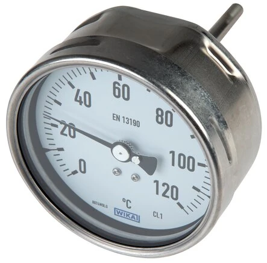
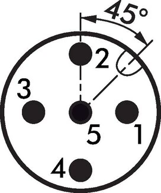

Đồng hồ nhiệt độ lưỡng kim (bimetal) WIKA có hai phiên bản cấu hình phổ biến: Industrieausführung – bản công nghiệp và Chemieausführung – bản hóa chất. Nhìn bề ngoài chúng khá giống nhau, nhưng lựa chọn sai — đặc biệt về vật liệu chống ăn mòn — có thể khiến thiết bị hỏng chỉ sau vài tháng thay vì phục vụ nhiều năm. Bài viết giúp bạn phân biệt hai bản và chọn đúng ngay từ khâu hỏi giá. Fast Group Engineering là đại lý cung cấp hàng chính hãng WIKA (Germany) tại Việt Nam.

Gợi ý chọn nhanh
- Cần đọc nhiệt độ tại chỗ hoặc đưa tín hiệu nhiệt về hệ thống.
- Cần chọn bimetal, RTD Pt100, transmitter hoặc thermowell.
- Cần thay thế theo chiều dài thân nhúng và kiểu chân.
- Dải nhiệt, chiều dài stem và đường kính thân.
- Kiểu chân, ren, vật liệu và môi chất.
- 2/3/4-wire, output 4-20 mA hoặc yêu cầu thermowell.
- Danh mục đồng hồ nhiệt độ WIKA.
- Bài bimetal thermometer.
- Bài RTD Pt100 và thermowell.
Tóm tắt nhanh
- Industrie (công nghiệp): dùng cho môi trường công nghiệp tiêu chuẩn, ít ăn mòn — chi phí tối ưu.
- Chemie (hóa chất): vật liệu và cấu tạo chịu ăn mòn tốt hơn, thường là inox 316/316L.
- Tiêu chí quyết định: môi chất, môi trường lắp đặt và tuổi thọ mong muốn.

Khác biệt chính giữa hai phiên bản
| Tiêu chí | Industrieausführung | Chemieausführung |
|---|---|---|
| Môi trường | Công nghiệp phổ thông | Hóa chất, ăn mòn |
| Vật liệu wetted/vỏ | Inox tiêu chuẩn | Inox 316 / chống ăn mòn cao |
| Kín & bảo vệ | Tiêu chuẩn | Cao hơn cho môi trường khắc nghiệt |
| Kích thước mặt | Thường Ø100 | Ø100/160, đọc rõ từ xa |
| Chi phí | Thấp hơn | Cao hơn |
| Ứng dụng | Hơi, nước, dầu nhiệt | Axit, dung môi, hơi hóa chất |
Ăn mòn diễn ra âm thầm như thế nào?
Trong nhà máy hóa chất hay khu vực ven biển, hơi axit và ion clorua tấn công bề mặt kim loại theo cơ chế ăn mòn rỗ (pitting). Một que đo bằng inox 304 có thể trông bình thường ở tuần đầu, nhưng các điểm rỗ li ti dần ăn sâu, làm rò môi chất hoặc sai số đọc tăng dần. Đây là lý do bản Chemie tồn tại: nó nâng cấp vật liệu tiếp xúc và cấu tạo kín để chịu được đúng loại môi trường mà bản Industrie không được thiết kế để phục vụ lâu dài.
Khi nào nên chọn bản Chemie?
- Môi chất hoặc khí quyển có tính ăn mòn: axit, kiềm, muối, hơi hóa chất.
- Nhà máy hóa chất, phân bón, xử lý nước, khu vực ven biển.
- Yêu cầu tuổi thọ dài trong môi trường khắc nghiệt, hạn chế dừng máy để thay thế.
- Cần wetted parts inox 316L chống rỗ tại mối hàn.
Khi nào bản Industrie là đủ?
- Môi trường công nghiệp thông thường, ít ăn mòn.
- Hơi nước, nước nóng, dầu nhiệt sạch.
- Ưu tiên chi phí cho ứng dụng phổ thông, số lượng lớn.
Vai trò then chốt của vật liệu wetted parts
Phần que đo (stem) và thermowell tiếp xúc trực tiếp môi chất là nơi quyết định khả năng chống ăn mòn:
- Inox 304: phổ thông, chống ăn mòn cơ bản, phù hợp môi chất trung tính.
- Inox 316 / 316L: chống ăn mòn và rỗ tốt hơn nhờ molypden; ưu tiên cho môi chất chua, ven biển, hóa chất.
- Hợp kim đặc biệt: cho môi chất cực kỳ khắc nghiệt, cấu hình theo yêu cầu.
Với môi chất ăn mòn, hãy kết hợp thermowell (Schutzrohr) inox 316: vừa bảo vệ que đo, vừa cho phép tháo/thay đồng hồ mà không cần dừng quá trình.
Cách chọn nhanh (Checklist)
- [ ] Môi chất có ăn mòn không? → Có: chọn Chemie.
- [ ] Vật liệu wetted: 304 / 316 / 316L.
- [ ] Dải nhiệt và chiều dài que đo (stem).
- [ ] Môi trường lắp (ven biển / ẩm / hơi hóa chất) → cân nhắc nâng cấp vật liệu.
- [ ] Có cần thermowell đi kèm không.
Chọn vật liệu wetted parts theo môi chất
Bảng dưới đây là hướng dẫn nhanh để bắt đầu; với môi chất đặc thù, hãy gửi thông tin để chúng tôi tư vấn chính xác:
| Môi chất / môi trường | Vật liệu gợi ý | Ghi chú |
|---|---|---|
| Nước, hơi, dầu nhiệt sạch | Inox 304 | Industrie là đủ |
| Ven biển, độ ẩm cao | Inox 316 | Chống ăn mòn clorua |
| Axit loãng, hóa chất | Inox 316L | Chemie, chống rỗ mối hàn |
| Môi chất khắc nghiệt đặc thù | Hợp kim đặc biệt | Cấu hình theo yêu cầu |
Dải nhiệt và giới hạn của đồng hồ bimetal
Đồng hồ nhiệt độ lưỡng kim hoạt động dựa trên độ giãn nở khác nhau của hai lớp kim loại ghép lại; khi nhiệt độ thay đổi, dải lưỡng kim uốn cong và làm quay kim. Dải đo phổ biến trải từ khoảng −70°C đến +600°C tùy model. Nguyên tắc chọn giống đồng hồ áp suất: để nhiệt độ làm việc nằm ở khoảng giữa thang đo, tránh vận hành thường xuyên sát đầu hoặc cuối thang để giữ độ chính xác và tuổi thọ. Với quá trình cần tín hiệu điện về hệ điều khiển, bimetal không phù hợp — khi đó nên dùng RTD Pt100 hoặc temperature transmitter.
Kết hợp thermowell: ren, kiểu lắp, chiều dài
Trong hầu hết ứng dụng công nghiệp, đồng hồ bimetal nên đi kèm thermowell (Schutzrohr). Ống bảo vệ này cách ly que đo khỏi áp suất, dòng chảy và ăn mòn của môi chất, đồng thời cho phép tháo hoặc thay đồng hồ mà không cần dừng quá trình hay xả bồn. Khi chọn thermowell cần thống nhất: kiểu ren hoặc mặt bích lắp vào process, chiều dài chèn (insertion length) đủ ngập vào dòng môi chất, và vật liệu tương thích môi chất (thường inox 316 cho môi trường ăn mòn). Chiều dài que đo của đồng hồ phải khớp với chiều sâu thermowell để cảm nhận nhiệt chính xác.
Sai lầm thường gặp khi chọn bimetal
- Chọn Industrie cho môi trường ăn mòn để tiết kiệm ban đầu — dẫn tới thay thế sớm, tốn kém hơn.
- Que đo quá ngắn so với thermowell, khiến đầu cảm biến không ngập đủ, đọc sai nhiệt.
- Bỏ qua thermowell ở đường ống áp lực, làm que đo mòn nhanh và khó thay thế.
- Đặt thang đo sát nhiệt làm việc, khiến kim luôn ở cuối thang và mau xuống cấp.
Bảo trì và hiệu chuẩn
Đồng hồ bimetal gần như không cần bảo trì trong điều kiện vận hành bình thường, nhưng nên kiểm tra định kỳ điểm 0, độ rơ của kim và tình trạng bề mặt que đo. Với các điểm đo quan trọng, lập lịch hiệu chuẩn theo yêu cầu chất lượng của nhà máy; chúng tôi có thể hỗ trợ hồ sơ hiệu chuẩn kèm theo khi đặt hàng.
Câu hỏi thường gặp
Bản Industrie lắp môi trường hóa chất được không?
Không nên — dễ ăn mòn và giảm tuổi thọ nhanh; hãy chọn bản Chemie hoặc nâng vật liệu lên inox 316.
316 và 316L khác gì nhau?
316L có hàm lượng carbon thấp, chống ăn mòn tại mối hàn tốt hơn, nên được ưu tiên cho môi chất khắc nghiệt.
Bản Chemie có đắt hơn nhiều không?
Cao hơn Industrie, nhưng bù lại tuổi thọ trong môi trường ăn mòn và giảm chi phí dừng máy để thay thế.
Cần tư vấn chọn vật liệu & báo giá?
Gửi cho chúng tôi môi chất, môi trường lắp đặt và dải nhiệt — chúng tôi sẽ đề xuất bản phù hợp và báo giá trong 24h.
- Email: minhduc@fastgroup.vn · Zalo: (+84) 938 888 958
Fast Group Engineering – đại lý cung cấp hàng chính hãng WIKA (Germany) tại Việt Nam.
Bài liên quan: [Đồng hồ nhiệt độ bimetal WIKA] · [Chọn chân đứng/ngang] · [Thermowell/Schutzrohr] · [Chọn thiết bị đo cho O&G]